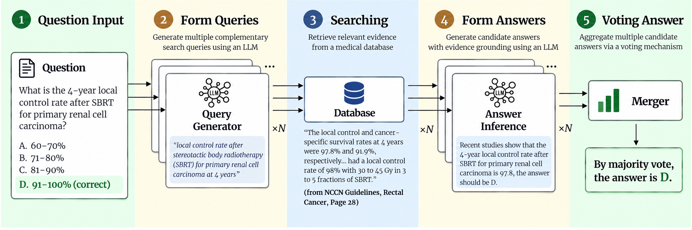
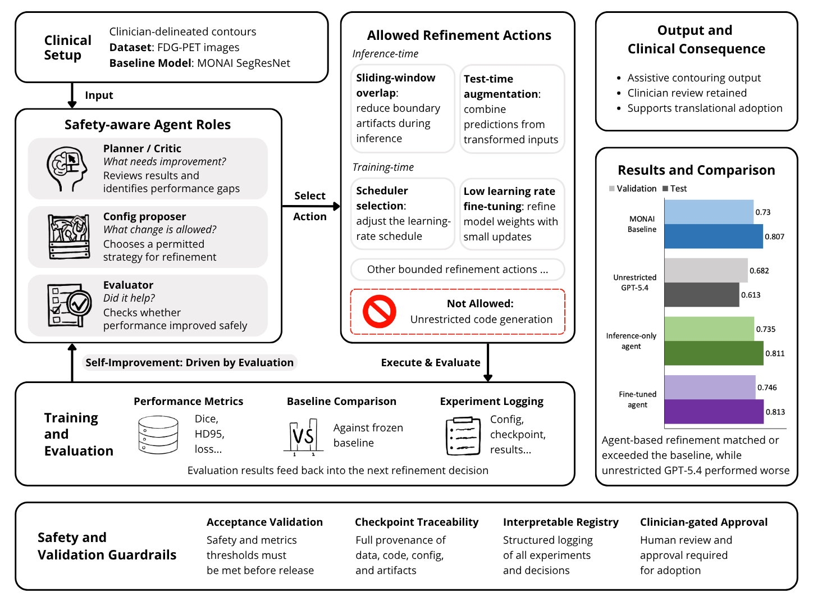

Abstract
Generative artificial intelligence can create images, dose distributions, and text, offering new ways to connect information across radiotherapy workflows. Radiation oncology is a multidisciplinary, multimodality field where ample opportunity exists for carefully bounded AI assistance. This chapter introduces diffusion models, transformers, and large language models from the perspective of physicians interested in their clinical and research applications. Diffusion models learn to generate spatial data through iterative denoising. Transformers relate information across a sequence or image, while large language models use these representations to generate language and structured responses. Vision-language models, retrieval-augmented generation, and tool-using agents extend these capabilities by combining clinical context with images, external evidence, and specialized software. Representative studies illustrate applications in synthetic imaging, dose prediction, target delineation, communication, and iterative treatment planning. Their results also show why convincing output should not be equated with patient-specific accuracy or clinical benefit. Translation requires evaluation of the generated output, its downstream effects, and the work needed for professional verification. Generative systems may support radiotherapy planning when their intended role, evidence sources, action limits, and review responsibilities are explicit; autonomous clinical decision-making requires substantially stronger evidence.
Keywords: generative artificial intelligence; diffusion model; transformer; large language model; radiotherapy; treatment planning; retrieval-augmented generation
3.1 Introduction
3.1.1 Why generative artificial intelligence matters to a radiation oncologist
In the modern oncologic era, effective radiation planning and delivery requires integration of an array of knowledge and data, including: the patient’s presenting symptoms and medical history, patient goals, pathology, tumor biology and genomic profile, radiation biology, physics of delivery systems, diagnostic imaging, tumor and normal structure contours, prescription dose, and organ at risk (OAR) dosing constraints [1]. The radiation oncologist considers these factors while defining the radiotherapeutic goal and a multidisciplinary team translates this intent into a deliverable plan. The path from diagnosis to treatment is complex, indirect, laborious, and as such, prone to error.
Generative artificial intelligence (AI) may smooth this workflow. It can generate or transform several representations within the patient’s context, though current practice relies heavily on human efforts for translation and interpretation. Examples include synthetic image production, incorporation of clinical text into target delineation, drafting responses to patients, gathering evidence for clinical questions, or proposing a structured change to planning objectives. These applications involve different models and levels of risk but can provide useful interfaces between information representations, reducing the friction involved in moving information through the workflow [2]. Treatment planning provides the principal practical example in this chapter, while communication, documentation, and research support illustrate related uses.
The central clinical distinction is between plausible output and faithful representation of the patient. Although generative AI can rapidly produce outputs that appear convincing, probabilistic generation does not guarantee correctness. A fluent explanation can contain an unsupported citation; a realistic synthetic image can alter anatomy; a predicted dose can omit an important constraint. Clinical evaluation must therefore establish what information the system used, what it generated, and how errors would affect the patient or plan creation. Generative models can assist the planning team, but their outputs require task-specific verification and clearly assigned professional responsibilities.
3.1.2 Scope and approach
This chapter follows three complementary foundations to introduce generative AI: diffusion models, transformers, and large language models (LLMs). Diffusion models provide a method for image generation and spatial distributions. Transformers are the architecture to relate information across distant representations, including words, image patches, structures, and other tokens, where a token is a basic unit of information represented and processed by the model. LLMs scale up the next token prediction method in transformers into a pragmatic language interface allowing prompts and instructions. These foundations are not mutually exclusive. Most modern LLMs are built based on the transformer architecture. Vision-language models (VLMs), retrieval-augmented generation (RAG), and agentic systems are system designs built around these foundations. VLMs connect different modalities in language and visual representations, RAG supplies retrieved external evidence to the model context, and agentic systems allow models to interact with permitted tools and orchestrate these foundations to other integral parts in radiotherapy workflows.
The chapter explains model inputs and outputs, how models are trained, and the errors that matter clinically. It emphasizes modern generative AI and the emerging transformations on planning workflows. Each application is considered in terms of the patient information supplied, the output generated, the evidence and constraints applied, and the consequences of an incorrect result. This framework links technical mechanisms to the requirements of clinical translation.
3.2 Diffusion models, transformers, and large language models
3.2.1 From prediction to generation
A discriminative model is usually trained to learn a mapping from inputs to a specified prediction, such as labeling a lesion as target or normal tissue. A generative model, on the other hand, learns the structured pattern from its training data distribution to produce a new sample. Generation may be unconditional, such as producing a synthetic image without a patient-specific input. Unconditional generation produces random samples using the learned distributions from samples provided, so in effect, it asks what a typical sample looks like. It can also be conditional, such as predicting a dose distribution from a patient’s radiographic images and physician designed contours. Conditional generation, however, uses specific supplied information to guide the output generation. These categories can overlap in practice: a generative model may be evaluated on a prediction task, and a language model may extract a fixed set of clinical fields.
Training adjusts model parameters from given examples, whereas inference uses the trained model parameters to produce a new case. Data used to select or tune the model should be separated from the final test data. A generated output reflects learned patterns and the information supplied for the current case. Although the produced result may not be explicitly presented in the training data, the output is constrained from the aggregated patterns represented in the training set. It is not, by itself, a new measurement of that patient, and the model alone may not be able to accurately synthesize information that depends on completely unseen data. This distinction is particularly important when an image appears to contain a structure or physical quantity that was not established by the source data.
3.2.2 Diffusion models: recovering signal from noise
Diffusion models repeatedly add a small amount of noise to a clean image until the original image signals are lost. During training, the model sees examples at different noise levels, so it learns the pattern to move one step back toward a clean sample. Once trained, diffusion models run this process in reverse during inference. The model starts from complete noise and then repeatedly performs learned denoising steps until structured image signals emerge [3].
Denoising is the learning mechanism, but the objective is broader than removing noise from a particular image. The model learns patterns that support sampling from an image or spatial data distribution. Conditioning guides this sampling using supplied information, which in radiotherapy may include computed tomography images, target delineations, beam arrays, or desired prescription dose characteristics (i.e., delivering a greater dose of radiation to the primary tumor while delivering a lower dose of radiation to at risk lymph nodes). The result is informed by the patient’s inputs, but it still depends on patterns learned from the training population.
Diffusion can occur in either the original image space or in a compressed latent space, a hidden map that represents image features and meanings numerically instead of using pixels. Latent diffusion first represents the data in a compact way. Then, it performs denoising in the hidden map and decodes the result to human-readable pixels. This method can effectively reduce memory and computation compared to diffusion with the original image, and sampling can also be accelerated with fewer denoising steps [4]. These engineering choices especially matter in multidisciplinary clinical settings because three-dimensional radiotherapy data can be large, and a computationally intensive method may not be feasible for particularly resource-intensive workflows such as online adaptive radiotherapy, where imaging, plan adaptation, and verification are performed while the patient remains on the treatment table.
Diffusion models offer flexible conditioning and can represent more than one plausible output. Their denoising objective avoids the adversarial competition used to train generative adversarial networks, and their mechanism allows the model to gradually remove noise in many small steps instead of using one-pass methods. Model performance still depends on the data, architecture, and optimization, however. Iterative sampling can be computationally expensive, and different samples may vary even when conditioned on the same patient. Although diffusion models alone can produce visually realistic results, they can still introduce, remove, or distort a clinically important structure during the denoising process. Perceptual quality must therefore be distinguished from patient-specific fidelity [5].
Clinical evaluation should specify the conditioning information and the properties that the output must preserve. Repeated generation from the same input can characterize sampling variability; generalizability requires independent cases, including external or temporally separated data. For synthetic computed tomography, visual quality measurements are not enough, as geometric accuracy and downstream dose calculation are more informative. Similarly, for dose prediction tasks, target coverage, organ-at-risk endpoints, and spatial hot spots also provide more anatomy context than a singular image similarity score.
3.2.3 Transformers: connecting important information in context
When a radiation oncologist is in the initial phase of creating a re-treatment plan and is reviewing a patient’s medical and treatment records, they pay particular attention to previously prescribed (or active) systemic therapies (i.e. chemotherapy, immunotherapy, and/or hormone therapy, etc.) past radiation treatment plans and elected dose, cumulative dose to normal organs of relevance, and the patient’s overall prognosis. More commonplace phrases in the patient’s electronic medical record are often times of less relevance. Transformers use the attention mechanism, which is a learned version of this selective comparison of context. Attention allows a token, such as a word fragment or image patch, to incorporate information from other tokens [6]. Tokens are a unit of data, which may be a representation of words, parts of words, image patches, contour features, or other forms of encoded information. As a limited analogy, a physician interpreting a note relates its statements to relevant context. The model’s learned weighting, however, is not clinical judgment.
In technical terms, each token is mapped to a query, key, and value. The query represents what the current token is searching for, the keys represent what other tokens offer, and the values contain the information to combine. Query-key pair comparisons produce compatibility scores. Scaling and softmax turn these into weights for combining values, which is efficient enough to apply across many token pairs. Multiple attention heads learn different relationships in parallel. For example, one may track negation, another temporal order, and another anatomy. In this process, positional information is included to supply order or location, as attention alone does not incorporate this layer of information.
There are several types of transformer systems: encoder-only, decoder-only, or encoder-decoder, and they are suited to different use cases. Encoder-only models read full input vectors through the self-attention mechanism, and they build contextual input representations for tasks such as classification. Decoder-only models generate sequences using causal self-attention, which excludes future tokens. They also form the basis of most conversational LLMs. Encoder-decoder models connect both architectures by additionally using cross-attention to connect the decoder to encoded input, capable of transforming one sequence into another, such as an image into a report [6]. A transformer is therefore an architecture, not automatically an LLM and not automatically a generative system.
For three-dimensional radiographic images, the same idea permits relationships within long ranges that are difficult for local operations. For example, the model is able to relate a target patch to different organs, even though they are distant in nature. However, scale can be a bottleneck in clinical problems. A three-dimensional image contains lots of information, which might not be comparable to words in a text prompt. In this case, extended methods such as hierarchical attention, compressed representations, and specialist encoders are adopted for feasible computations.
Clinical interpretation is dependent on the representations of the case. The token may be different forms, such as a word segment, an image patch, a contour feature, or a compressed latent element, and a model may receive an original three-dimensional volume or processed two-dimensional views. These choices determine which relationships the transformer can learn. Attention maps display weighting within attention operations, but should not be treated as a complete explanation of the model’s decision or as evidence of clinical correctness.
3.2.4 Large language models: powerful but ungrounded predictions
Most contemporary LLMs use a decoder-only transformer architecture that is trained to predict the next token from preceding context. Pretraining is the natural first step to train a language model, which exposes the model to large collections of data to adjust its parameters to improve that prediction. At scale, the model learns statistical patterns that support fluent language generation and useful performance on many tasks. These capabilities do not mean that its stored information is complete, current, or clinically reliable.
To make the foundation model better adapted to specific scenarios, post-training can be applied to these models as the next step. Instruction tuning gives the model examples of useful question-answer behavior, helping it produce desired responses under specific tasks. It is also an option to familiarize the model with examples that are likely to appear in the actual task. For example, for a clinical QA model, tuning data may incorporate question-answer pairs derived from clinical notes. Preference-based alignment, on the other hand, further encourages responses that people judge helpful and discourages some unsafe behaviors [7]. This method gives the model user preferences, instructing it to avoid unwanted answers for safety considerations. A foundation model is broader than one application. It is trained on wide data and adapted to many downstream tasks [8]. Medical foundation models extend this idea to combinations of clinical text, images, signals, and structured data [9].
The crucial limitation also comes from the LLM’s training objective. The model is rewarded for producing a likely continuation, but not for distinguishing a true statement that follows guidelines from a plausible one. Its knowledge is encoded in parameters and can be internally inconsistent. A confident answer is a linguistic behavior by predicting the next token using the mapping from training data, rather than a calibrated probability of clinical correctness. Reviews of LLMs in medicine therefore distinguish impressive language competence from reliability, privacy, and bias [10].
Large pretrained models can directly adapt to new tasks from instructions and examples supplied in the prompt [11]. Prompt and context window are integral parts of an LLM system because they determine which information is available during next-token prediction. Different prompt design methods condition the output in different ways. A model may use zero-shot with instructions alone, or few-shot with examples to demonstrate the expected task and output format [11]. In clinical applications, prompts may also decompose a complex task into multiple intermediate steps, require a predefined output schema to fulfill software input requirements, or explicitly identify information that must be present before an answer can be produced. These approaches do not change the model parameters, but they supply information in the form of instructions at inference time only.
Prompt design is distinct from model training and retrieval, and they can be used together depending on the objective. Fine-tuning changes model parameters, whereas prompting changes the instructions and examples supplied for the current task, and RAG adds external evidence to the model context. Changing a prompt can alter the model behavior without any updates to the underlying model. Due to the crucial effects, prompts used in validated workflows should therefore be treated as versioned system components.
Prompting and post-training cannot recover patient facts that were not supplied. If the prescription, prior dose, or pathology needed for a task is absent, the model may not produce a grounded answer even with a well-written prompt. In this case, the system should request the missing information or abstain. Contradictory instructions, ambiguous wording, and changes in context can also alter a response. A clinically bounded task should specify which inputs are mandatory and how their absence prevents further action, as encouraging the model to infer without grounded evidence can be somewhat dangerous.
Evaluation should trace a response to the patient information and evidence available in the model’s context or verified tool outputs. Numerical calculations and range checks should use appropriate deterministic software. For hosting, deployment may use local infrastructure or an externally hosted service, depending on the model and institutional requirements. Either arrangement must keep protected health information within an approved data handling framework. The workflow must also define how uncertainty or failed checks lead to escalation.
3.2.5 From models to clinical systems
Modern clinical systems are assembled from these foundations. A vision-language model connects visual and linguistic representations. Retrieval-Augmented Generation places retrieved evidence from a database into the LLM context before generation [12]. An agent adds a goal, state, permitted tools, perceptions, and a control loop that can revise the next action planning. For instance, ReAct and Toolformer are influential examples of reasoning-action loops and learned tool use [13,14]. These combinations are particularly relevant to radiotherapy because clinical intent is linguistic, anatomy and dose are visual or spatial, and planning requires interaction with specialized software.
 View full size ↗
View full size ↗Table 3.1. Comparison of three complementary foundations for understanding generative AI.
Foundation | Clinical intuition | Typical output | Radiotherapy relevance | Main caution |
|---|---|---|---|---|
Diffusion model | Learns to reverse progressive noise | Image, dose map, or other spatial sample | Synthetic imaging, reconstruction, dose prediction | Plausible appearance may not preserve patient truth |
Transformer | Learns which tokens or patches matter to one another | Contextual representation or generated sequence | Links distant anatomy, text, contours, and dose features | Attention is not proof or explanation |
Large language model | Predicts the next token at very large scale | Text or structured language output | Summarization, communication, evidence access, interfaces | Fluency can hide unsupported content |
3.3 How generative AI could transform radiotherapy planning
3.3.1 Planning is a chain of representations
Efficient and effective radiotherapy planning requires a multidisciplinary team to design a comprehensive treatment plan that conforms to a disease site of interest while limiting dose spillover to nearby healthy tissues and organs. In this process, different forms of representations are either introduced or translated from another form. The physician defines disease extent, prescription, priorities, and acceptable trade-offs. Radiology and pathology help localize gross disease and predict at risk regions where microscopic disease may harbor. Contours help delineate both targets and organs at risk. Depending on the treatment objective, the treatment planning system performs dose calculations to predict absorbed dose in a patient and tweak beam parameters and angles to optimize treatment goals (i.e., maximize dose delivered to a tumor, minimize dose delivered to nearby healthy tissue). The team then interprets dose volume histograms, dose heterogeneity, robustness, and feasibility before approval [15]. Generative AI may assist at several stages of this process, although the appropriate approach depends on the specific planning task and the type of information being processed.
Diffusion models are naturally suited to continuous spatial representations, such as imaging tasks. Transformers are suited to relationships across many parts of a case, and these parts could be in different types of representations. LLMs are suited to language, instructions, and orchestration, providing a natural interface for linguistic communication. The most credible clinical systems should combine these capabilities with conventional optimization and deterministic checks, instead of expecting one foundation model to replace the planning team.
3.3.2 Diffusion models for imaging and dose
Conditional diffusion models can generate spatial outputs relevant to radiotherapy, including synthetic images and candidate dose distributions. For example, diffusion models can be integrated into a magnetic resonance imaging-only workflow to produce synthetic computed tomography to calculate radiation dose. Image synthesis may support workflows such as magnetic-resonance-only planning or cone-beam computed tomography correction, but each application requires evidence that clinically important anatomy and quantitative information are preserved [5]. Sampling different dose distributions may help explore possible spatial patterns, but it does not establish that any sample is achievable or clinically acceptable.
DoseDiff illustrates a dose prediction instance conditioned on anatomy. It uses computed tomography and signed distance maps encoding the spatial relationship to targets and organs at risk to guide generation. The study reported improved dose prediction performance relative to comparison methods on its evaluated datasets [16]. Its relevance is the incorporation of anatomy into dose generation, and any subsequent optimization, dose calculation, and clinical review are still required.
A predicted dose distribution is not itself a treatment plan, but it may help the planning team identify cases in which further optimization is warranted. For example, unexpectedly high organ-at-risk exposure relative to the predicted distribution could prompt review of the current objectives and achievable trade-offs. The prediction should remain a model estimate rather than being interpreted as a patient-specific feasibility limit. Its clinical usefulness should therefore be evaluated by whether access to the prediction helps planners produce better deliverable plans, reach an acceptable plan more efficiently, or identify important deficiencies more consistently. Machine constraints, dose calculation, robustness where relevant, and clinical approval remain necessary parts of the planning workflow [16].
3.3.3 Transformers and multimodal target definition
Target delineation is not only radiographically guided, but is also clinically informed. The intended target(s) are influenced by pathology, stage, extent of surgical resection, and/or anticipated patterns of spread, and may include coverage of suspected disease that is not visible on the planning scan [17]. Multimodal models can connect image features with representations of this clinical context. A language model does not need to draw the contour itself, but it can provide clinical context to condition a specialist three-dimensional segmentation network.
LLMSeg is an example of using clinical text to condition three-dimensional breast target delineation. Instead of using imaging data alone, it supplies clinical information in natural language to incorporate additional knowledge in another modality, which reported stronger generalization than vision-only comparators [18]. Medformer is another example built for large-scale representations, which combined text-rich features with hierarchical visual encoding in prostate and oropharyngeal cases [19]. These systems are both multimodal contouring models for corresponding specific tasks. However, these task-specific systems do not establish that a general-purpose chatbot can interpret volumetric imaging or define treatment targets with the reliability of a radiation oncologist.
A useful direction is to evaluate whether explicit clinical information changes a contour in the intended way. Factors such as laterality, the postoperative operative bed, histopathology, and theoretical at-risk nodal region are often traceable to the medical records or published guidelines. Evaluations could present the same image with different, clinically valid descriptions and assess whether the model modifies the target appropriately. Missing or contradictory descriptions should also be tested. From the clinician’s perspective, the relevant outcome is whether incorporating this context produces a more appropriate target that does not require an excessive amount of correction. Average overlap metrics alone would not establish that the model used the clinical information correctly [18,19].
3.3.4 Natural Language as the work product
The most immediate LLM applications are tasks that take natural language as the work product. Language-based applications include administrative drafting, record summarization, patient communication, and question answering. Their risk depends on the content and intended use, as a patient instruction can affect care even when no planning parameter is changed. These applications therefore require task boundaries and appropriate review [20].
Benchmark performance shows why restraint is needed. GPT-4 performed substantially better than GPT-3.5 on a Radiation Oncology In-Training (TXIT) examination, but its performance varied across topics and generated recommendations could contain unsupported content. When the model is asked to give complex recommendations, some output also includes hallucinated content [21]. Such benchmarks assess responses to a defined question set, and they do not establish safe communication or decision making in practice. A clinical assistant must also handle the correct patient record, current guidance, incomplete information, and the institutional workflow.
It is relatively easy to define clear boundaries in administrative tasks. In a study of denied radiotherapy services by insurance companies, several LLMs are tested, including GPT-3.5, GPT-4, and a web-enabled GPT-4. These models are able to turn the known clinical reasoning into a proper written appeal. Based on physicians’ judgement, these generated drafts are likely to expedite clerical work. Among these models, GPT-4 variants showed stronger reasoning and readiness for submission. Importantly, fine-tuning GPT-3.5 on only 53 historical letters increased confabulation, and all evaluated models performed poorly when asked to support clinical assertions with existing, relevant primary literature [22]. More customization is not automatically better.
Patient communication is another potential application. An accompanying editorial discussed direct summarization and a sequential approach that first extracts trial information before simplifying it [23]. Gao and colleagues compared these approaches across 11 trials. Readability and topic coverage were similar, and clinician preferences favored direct summaries in 27 of 44 responses. Sequential summaries showed slightly fewer reported inaccuracies, biases, and hallucinations. In the patient survey, 11 of 13 respondents reported improved understanding of the BROADBAND trial [24]. While these findings do not prove that additional generation stages improve quality or safety, they support supervised evaluation of communication aids.
Local, task-defined models may be particularly useful. A locally hosted system summarized CT simulation orders with high agreement against content verified by therapists [25]. Multi-institutional work on radiation oncology incident reports showed that prompting, retrieval, model upgrades, and local variation all affected summarization and classification [26]. Instead of treating LLMs as black boxes, these studies clearly define traceable information in narrowed tasks. They specify the input, user, output, and error criteria more clearly than an open-ended conversation, making them useful examples for translational research.
3.3.5 Natural language as an interface to planning
A language interface can translate a physician’s request into candidate planning fields. For example, a request to prioritize spinal cord dose constraints while not sacrificing target coverage could be converted into proposed objectives and priorities. Before execution, software should validate structure identity, laterality, units, prescription, relevant prior dose, objective type, allowed range, and priority. These checks are necessary even with deterministic decoding, because a reproducible language model response can still be incorrect. The physician should review both the original request and its structured interpretation before a consequential change.
This division of labor is important. The LLM handles flexible language; structured software handles arithmetic, schema validation, and range checks; the treatment planning system handles optimization and dose calculation. With these models and tools, qualified professionals should supervise this process and approve the result. The interface can reduce friction without relocating clinical authority into a probabilistic language model.
Clinical interoperability is an essential interface problem. Since the clinical planning process requires the transformation of representations, a planning copilot should still preserve the identity and geometry of multimodal information, such as images, prescriptions, and dose, across the electronic record and treatment planning systems. Standardized representations are preferred, such as DICOM, consistent structure naming, and controlled software interfaces, as they can reduce ambiguity at these boundaries. The language model may interpret the physician’s request, but important identities and units should be preserved by deterministic infrastructure to ensure accuracy.
3.3.6 Language Models’ limited but useful role in research writing
LLMs provide great aid to assistive research tasks. For clinical researchers, LLMs can assist with search-term development, outlines, language editing, and code drafting. They should not be treated as bibliographic authorities: generated references may be nonexistent or may not support the associated claim. Even web-enabled models performed poorly at supplying appropriate primary literature in the radiotherapy appeal study [22]. AI can assist with language and workflow, but it cannot establish novelty, validate a result, or decide whether an interpretation is scientifically justified. Researchers remain responsible for the scientific question, data and analysis, interpretation, and every citation. Any use of these tools should follow applicable institutional and publisher policies, with particular attention to verification, confidentiality, and accountability [27]. The model should improve expression only after the evidence has been independently established.
Table 3.2. Minimum clinical verification for common generated outputs.
Output | Clinical requirement | Minimum verification |
|---|---|---|
Synthetic image | Preservation of patient geometry and quantitative values | Registration, anatomy, task-specific quantitative testing |
Predicted dose | Clinical achievability and spatial acceptability | DVH, dose review, robustness, deliverability |
Contour | Traceable image and clinical conditioning | Overlay review, boundary metrics, editing burden |
Text answer | Support from identifiable, current evidence | Source check, date/version check, unsupported-claim review |
Structured planning object | Correct units, ranges, anatomy, and prescription | Schema validation and explicit clinician confirmation |
3.4 Vision-language, retrieval-augmented, and agentic systems
3.4.1 Vision-language models: connecting clinical intent with images
Radiotherapy is inherently multimodal. Different forms of representations, including text, image, numerical data, and dose information, are involved in the treatment planning. For example, a planning case may involve diagnostic computed tomography (CT), magnetic resonance imaging (MRI), and positron emission tomography (PET), simulation scans, projected dose distributions, dose-volume histograms, pathology, and prescribed dose with corresponding OAR constraints. A VLM is designed to place both visual and linguistic information into a shared computational representation. In a typical VLM design, an image encoder converts an image into visual tokens. For linguistic data, a language model processes text tokens, and a connector allows information to pass between both models, connecting visual and language features. The system may then use the multimodal context to produce a textual description, answer a question about an image, localize a region, generate a structured output, or use language to condition a specialist imaging model [9].
A text-only model can interpret a description of recurrent disease abutting the pelvic sidewall, but cannot verify that description against imaging it has not received. Conversely, an image-only model may lack clinical information that changes the intended target as defined within natural language. Although VLMs are unable to replace the specialist components that perform calculations under treatment constraints, their value lies in linking these multimodal sources.
Published radiotherapy studies illustrate several forms of multimodal integration. LLMSeg and Medformer use clinical language to condition specialist three-dimensional target delineation networks [18,19]. GPT-RadPlan uses a general-purpose multimodal model within a task-specific planning workflow, combining visual plan information with dose-volume data [28]. These examples show that clinical specialization can reside in the surrounding system as well as in the model.
The input representation remains a major source of error. Important medical information could be misprocessed before the model sees it, so clinicians should consider the information presentation. A two-dimensional screenshot may omit superior-inferior extent, windowing may suppress a relevant finding in another frame, down-sampling may erase a small but non-negligible structure, and a generic VLM may treat dose color wash as an ordinary image component rather than a quantitative field. Visual grounding is a technique to connect image components to a verbal statement. However, visual hallucination can also occur, and visual grounding can also fail by reporting absent or wrong features. Studies should document the views, channels, geometry, and preprocessing supplied to the system and assess three-dimensional and quantitative fidelity. Apparent visual grounding does not remove the need for specialist review.
One potential application is preparing a draft summary for multidisciplinary plan review. A VLM could associate a written clinical concern with the supplied image views or dose information and direct the reviewer to the relevant source. The key research question is whether this helps the clinical team identify meaningful discrepancies or assemble the case more efficiently. Evaluation should include findings that are absent from the supplied views and cases in which text and images conflict, while measuring missed findings, unsupported visual statements, and review time. Such a summary should complement, rather than replace, inspection of the original images and quantitative planning data.
3.4.2 Retrieval-augmented generation: grounding language in evidence
RAG supplies external information at inference time. An LLM is a probabilistic model to predict the next token, which answers a prompt based on the patterns of its training data. It is similar to a trainee taking a closed book examination based on their memory, without looking up anything related to the question. RAG gives the system an open book. The system retrieves material relevant to a question and places selected passages in the language model’s context before generating an answer [12]. Retrieval may use keyword matching, vector similarity, or a combination. The system then places the selected material in the model’s context together with the original question, allowing the LLM to generate an answer using the retrieved evidence. It can make the evidence collection updateable without retraining the generator, but retrieval alone does not establish that the selected material is correct, current, or applicable.
A clinical RAG workflow has several separable stages. It begins with a curated, versioned collection of documents divided into retrievable units. The user’s request may be reformulated into search queries. Candidate passages are then retrieved, optionally filtered or reranked, and supplied for synthesis. Filters can restrict disease site, date, or evidence type. The final answer should link claims to supporting sources and expose missing or conflicting information. This staged design allows retrieval, synthesis, and citation to be evaluated separately.
A clinically useful RAG assistant could prepare an evidence summary for a defined clinical question, linking important statements to their sources and identifying missing patient information. For a question related to relevant protocols, it should distinguish eligibility criteria, treatment requirements, and institution-specific procedures rather than combining them into a single recommendation. When reviewing prior treatment, the system could retrieve relevant passages from the record while leaving dose reconstruction and calculation to specialist tools. Its value should be evaluated by whether it enables faster access to applicable evidence while reducing unsupported claims and clinically important omissions. Conflicting guidance should remain visible for clinician interpretation, and insufficient evidence should prompt a request for additional information or escalation.
Retrieving external information does not automatically make the LLM’s answer correct. During the indexing stage, the corpus may omit the relevant guideline, contain an outdated version, or mix incompatible disease sites and jurisdictions. In this case, the problem occurs in the document collection itself. Even though the corpus is well-constructed, the retriever may select the wrong passage, and the generator may overstate the claim that the passage supports. Therefore, a clinical RAG system needs a carefully governed corpus, metadata for date and evidence level, retrieval quality evaluation, claim-level citation, and an explicit response when sources are absent or conflict. Fortunately, the separable design makes each consideration traceable and testable.
Some modern RAG variants add self-reflection or corrective retrieval. These mechanisms allow the model to learn when to retrieve and when to critique generated text, but model self-critique is not independent verification [29]. Component tests should assess retrieval relevance and evidence coverage, while generation tests can distinguish errors caused by inadequate evidence from errors made despite adequate evidence. Automated frameworks such as RAGAs support parts of this assessment [30]. End-to-end clinical evaluation must additionally examine answer correctness, completeness, source support, and appropriate abstention under realistic retrieval failures.
The benefit of using RAG is dependent on the base model and task. Studies showed that RadOncRAG, a clinical RAG system for radiation oncology, improved several nonreasoning models on a specialist examination. However, it did not consistently improve stronger reasoning models, and its inherent retrieval and synthesis steps increased computational cost [31]. The utility of RAG is also highly dependent on the corpus quality. A Japanese-language system built from radiotherapy textbooks and guidelines improved examination accuracy across professional groups, and this study showed the significance of language, corpus composition, and domain fit [32]. Therefore, retrieval should be justified when a task genuinely requires attributable up-to-date information.
3.4.3 Worked example: evidence-grounded radiation-oncology reasoning
Liu et al. developed a multi-agent retrieval-augmented generation (RAG) pipeline for answering board-style radiation oncology questions using a curated reference database [33]. Rather than relying solely on a language model’s internal knowledge, the pipeline uses five agents to formulate focused retrieval queries and independently generate answers from retrieved passages. For multiple-choice questions, the candidate answers are combined by majority vote, and the final answer is returned with supporting evidence. During inference, the pipeline identifies useful passages, supplies their source metadata, and provides a natural-language explanation of how the evidence supports its answer. It also assigns confidence scores from 1 to 10 to cited passages, reflecting their perceived accuracy and usefulness for answering the question [33].
The pipeline was evaluated on 283 text-only questions from the 2021 American College of Radiology Radiation Oncology In-Training Examination, after excluding questions requiring image interpretation. Using Gunderson & Tepper’s Clinical Radiation Oncology and National Comprehensive Cancer Network (NCCN) guidelines as retrieval sources, the GPT-5 configuration achieved 91.5% accuracy, compared with 89.3% for the corresponding non-retrieval baseline. In the reported confidence analysis, GPT-5 confidence scores achieved an area under the receiver operating characteristic curve of 0.91 for discriminating correct from incorrect responses [33]. These findings concern performance on a defined multiple-choice benchmark rather than patient-specific clinical decision-making.
A representative successful example asks about the four-year local control rate after stereotactic body radiotherapy (SBRT) for primary renal cell carcinoma. The non-retrieval model selected the incorrect range of 81–90%. The RAG pipeline instead retrieved relevant NCCN guideline material and selected the correct range of 91–100%, with a reported confidence score of 9.0/10. Its accompanying explanation referred to pooled analyses reporting local control estimates of approximately 97–98% [33]. In this example, retrieval supplied the specific quantitative evidence needed to distinguish between plausible answer choices.
The study also presents a contrasting failure case involving the priority for maintaining trial integrity when using historical controls in phase III trials. The retrieved material concerned earlier-phase trials and did not directly address the question. Although the system assigned a low confidence score of 4.0/10, it nevertheless returned the same incorrect answer as the non-retrieval model [33]. A low score accompanied an incorrect answer in this example, but one case cannot establish an effective threshold for identifying errors or requesting review.
The workflow enables errors to be examined at different stages rather than treating every incorrect answer as an undifferentiated model failure. Through manual review of the cited material supporting incorrect responses, the authors identified four categories: knowledge absence, retrieval failure, utilization failure, and controversial or ambiguous questions [33]. These categories distinguish situations in which the database lacks the required information, relevant information is present but not retrieved, retrieved information is used incorrectly, or the question itself lacks a clear evidence-based answer.
The source-ablation analysis further highlights the importance of knowledge-base curation. Adding randomly selected PubMed Central articles to the textbook-and-guideline configuration reduced accuracy for several evaluated models, including GPT-5 and GPT-4.1 [33]. This comparison does not establish that adding clinically targeted literature is harmful or that an automated selection method is superior. It illustrates why a corpus change should be evaluated as a specific intervention, with attention to the material added, the passages retrieved, and the uncertainty in the observed difference.
The broader lesson from this study is that specialist question answering can be organized into inspectable stages of query formulation, evidence retrieval, answer generation, and aggregation. Supporting citations make source inspection possible, but whether confidence displays improve review requires separate evaluation. The demonstrated contribution is therefore a structured approach to evidence-supported radiation oncology question answering, with clinical applicability requiring further evaluation and clinicians retaining control over final clinical decisions.


View full size ↗3.4.4 Agents: when a model can act
An agent is a system in which a model can select actions, use permitted tools, observe results, and decide whether to continue, stop, or request assistance. It is not a separate model family. Compared to a general chatbot, an agent provides the model with tools, and its orchestration allows a decision-making process to interact with the environment, and some agents retain working state or longer-term memory. ReAct interleaves planning with action and observation, while Toolformer addresses learning when and how to call tools [13,14]. Agentic Design Patterns organizes practical patterns such as planning, reflection, memory, multi-agent roles, and human oversight [34]. These sources supply the engineering experience. However, for clinical competence, evidence is still needed from clinician evaluations.
In a radiotherapy workflow, the agent receives a goal and a defined case state, which may include patient-specific information relevant to the task. It then selects a permitted action and issues a typed tool call, which may include external APIs, web browsers, and databases. Then the agent observes the result and updates its working state. It will evaluate whether the current state satisfies the user’s prompt, and either continues, stops, or requests human review. The LLM can interpret language and choose among permitted actions, while specialized software performs important technical tasks. A treatment planning system still performs optimization and dose calculation, and separate checks validate identities, units, and constraints. Keeping model proposals, software execution, and verification distinct makes the workflow easier to inspect and audit.
In radiotherapy, the action boundary determines risk. A read-only agent that retrieves a protocol is less risky than an agent that changes an optimization objective. Safe designs use an allow-list of tools, typed inputs and outputs, hard dose and unit checks, maximum iterations, resource limits, a record of every action, and a clear stopping or escalation rule. Sometimes a second model is introduced in this workflow to check and critique the agent’s actions. A model’s review may improve coverage, but correlated models can agree on the same error. Hence, deterministic checks and expert review remain necessary.
An agentic system is sometimes labeled autonomous, but it is more informative to describe the independence of each stage. At the lowest level, an agent reads and summarizes without the permission to change any data. The next level drafts a structured proposal for clinician approval before making any write actions. A higher level may execute reversible actions in a safe sandbox, a controlled, isolated environment where experimental changes cannot affect patient care or production systems, before implementing any actual changes. Consequential actions, including changes to targets, prescription, and optimization objectives, should not be implemented without explicit professional authorization. One safety level is not necessarily better than the others. The agent should receive more autonomy only when there is evidence showing that the environment is safe for a specific task. It should not be arbitrarily changed with different general model capability.
Multi-agent systems assign different subtasks within a workflow to different agents. They divide a workflow into roles such as retriever, planner, evaluator, and critic. Role separation improves traceability, and it prevents one prompt from carrying every responsibility. Oncology research includes multimodal agentic systems that retrieve medical records and invoke specialist models according to the task [35]. A recent scoping review shows growing interest in using agentic systems, but studies do not agree with the definitions, evaluation methods, and maturity of AI agents in clinical settings [36]. Thus, when evaluating an agent study, it is useful to focus on the permitted actions, tool interfaces, retrospective or prospective setting, failure recovery, and whether any output influenced care. These designs and evaluations help build a trustworthy system.
3.4.5 Emerging treatment planning agents
Planning studies illustrate several agent roles. GPT-RadPlan used visual and dose volume information to suggest changes to optimization goals, and the system was evaluated in 17 prostate and 13 head-and-neck cases [28]. GPT-Plan assigned dosimetrist and physicist roles and used historical-plan retrieval and planning tools in 12 lung and five cervical cases [37]. In another study, a system directly interacted with a treatment planning software under physician guidance. While the system does not rely on any previous reference plan, it is operated under supervision and tested in a small head-and-neck evaluation [38]. Other reports examine multi-agent planning simulation and broader orchestration [39,40]. In the latter study, a system integrated with a treatment-planning platform was evaluated on 60 retrospective brain, lung, and prostate cases, and aggregate dosimetric gains differed between intensity-modulated and volumetric-modulated arc planning [40].
These studies support feasibility within specified planning workflows [28,37–40]. A clinically useful next step is to evaluate an agent that prepares candidate changes in a research copy of a treatment plan and returns a comparison showing what changed, which objectives improved, and which constraints or trade-offs remain unresolved. This workflow should be compared with the department’s existing planning approach using the same cases and clinical goals. Relevant outcomes include final plan acceptability, spatial and dose-volume findings, time to an acceptable plan, failed actions, and the work required for review and correction. Such an evaluation would help determine whether agentic orchestration adds practical value beyond the ability to call planning tools alone.
3.4.6 Worked example: bounded FDG-PET contour refinement
In their cervical tumor autosegmentation project using FDG-PET, Du et al (reference) challengethe assumption that more agent freedom produces better results. The cohort includes 292 patients with locally advanced cervical cancer, divided into 211 training, 37 validation, and 44 test cases. MONAI SegResNet, a strong deep learning baseline for 3D segmentation, achieved a validation Dice score of 0.7295. In contrast, a fully autonomous GPT working on unrestricted workspace only achieved 0.6818, which underperformed the baseline [41].
Performance improved when the agent was restricted to an interpretable action space. The agent chooses sliding-window overlap and test-time augmentation from its bounded action allow-list, which increased validation/test Dice to 0.7352/0.8107 without altering model weights. In the subsequent experiment, the agent also proposed low learning rate fine-tuning with cosine scheduling for human review. With approval, the model achieved the highest reported validation/test Dice of 0.7455/0.8126. During the experiments, every trial was registered and presented to the clinician, and checkpoints were traceable. Any adoption in optimization required a predefined comparison and clinician approval.
Dice alone is insufficient for contouring. Boundary metrics, overlays, lesion-wise failures, uncertainty, and clinician editing burden should accompany overlap [42]. The cohort also contains acquisition changes that create a meaningful temporal drift test. Protected holdouts and long-tail stress cases are needed to prevent repeated tuning to familiar data [43,44]. For this project, we learned that bounded, auditable experimentation provided greater control and achieved better performance than unrestricted pipeline generation. In this experiment, unrestricted working state and action permissions did not improve performance and could degrade the result. Even when the actions are under control, clinician supervision is still required, and each stage should be designed to be separable and auditable.


View full size ↗Table 3.3. Selected generative-AI studies relevant to radiotherapy practice and planning.
Study | Task | What it shows | What it does not establish |
|---|---|---|---|
Kiser et al. [22] | Insurance appeal drafting | Potential clerical assistance; small-data fine-tuning worsened confabulation | Independent literature support or unsupervised submission |
Gao et al. [24] | Clinical-trial communication | Comparable summary readability and topic coverage; supervised patient-communication feasibility. | Replacement of consent discussion |
DoseDiff [16] | Dose prediction | Conditional diffusion can model anatomy-aware dose distributions | A deliverable or approved treatment plan |
LLMSeg/Medformer [18,19] | Target delineation | Clinical language can condition specialist 3D vision models | General visual understanding by a chatbot |
GPT-RadPlan/GPT-Plan [28,37] | Iterative planning | Models can coordinate evaluation and objective adjustment | Prospective clinical benefit |
eRT-RAG [33] | Evidence-grounded reasoning | Compound retrieval and confidence workflow on a defined benchmark | Clinical decision safety |
FDG-PET agent [41] | Contour-model refinement | Bounded actions outperformed unrestricted pipeline generation | Autonomous contour approval |
3.5 Evaluation, clinical translation, and governance
3.5.1 Measuring performance and clinically important errors
Evaluation should begin with the intended clinical task and the errors that would matter to its users. Since the majority of current clinical generative AI systems are task-specific, there is no single metric that can evaluate every model. For synthetic images, assess preservation of anatomy and quantitative information, followed by the effect on dose calculation or contouring. For predicted dose, assess coverage, organ-at-risk exposure, and the quality of plans produced using that prediction. For contours, include boundary errors and the work required for correction. Average similarity or overlap should be accompanied by examination of clinically consequential failures [42].
Language outputs require separate assessment of factual correctness, completeness, source support, and applicability to the case. A real citation may support only part of a statement or concern a different patient population. Reviewers should therefore check important claims against the cited passages and record unsupported assertions and omissions. For open-ended answers, a predefined clinical rubric should distinguish required content, acceptable alternatives, and potentially harmful recommendations. Agent evaluation should additionally record inappropriate tool calls, constraint violations, unsuccessful actions, and recovery from failure. These assessments should include time and effort spent verifying and correcting the output [45].
Comparative evaluations should determine whether added system complexity produces a meaningful improvement in the intended task. For RAG, this may require comparing the same base model with and without retrieval. Similarly, a multi-agent system should be compared with an appropriate static alternative. Model versions, inputs, and inference settings should remain comparable across conditions, and stochastic systems should be evaluated across repeated runs to characterize variation. Results should report paired differences with uncertainty, including both cases corrected by the added component and cases that become worse. Small numerical gains or statistically non-significant differences should not be presented as established superiority. When many alternatives are evaluated, the principal comparison should be prespecified and multiplicity should be addressed.
Final test cases should remain protected from prompt selection, corpus revision, and agent tuning. Public examinations present an additional concern because their questions may have appeared in model pretraining data. Newly authored or temporally separated questions can provide complementary evidence, although their independence from training data should still be considered. Evaluation should also record the corpus version, distinguishing between the answer expected when a question was originally written and the recommendations supported by current clinical practice. Feedback used to improve the system belongs to development. Once the system changes, the revised version should be evaluated again on protected cases.
Confidence scores also require a clearly defined interpretation. Discrimination assesses whether incorrect answers tend to receive lower scores than correct ones, whereas calibration assesses whether predicted probabilities correspond to observed frequencies of correctness. A confidence rating of 9 out of 10, for example, should not automatically be interpreted as a 90% probability of being correct. If confidence is intended to represent probability, calibration should be assessed on independent data. Metrics such as the Brier score can summarize probability error but should not replace direct examination of calibration. If confidence is used to trigger human review, evaluation should also report how many responses are flagged, how many errors are detected, and how many incorrect responses remain unflagged [46].
Human assessment should use predefined criteria and report rater expertise, agreement, and uncertainty. Where feasible, evaluators should be blinded to system identity and formatting cues that could reveal which system produced an output should be minimized. Repeated ratings of the same small group of cases should not be treated as an equivalent number of independent clinical cases. Alongside model performance, studies should measure response time, computational cost, and the work remaining after verification and correction. Clinical usefulness depends on the performance of the complete workflow rather than generation speed alone [45, 47].
Average performance does not always show the full picture, and it can sometimes conceal clinically important failures. Evaluation sets should deliberately include difficult cases where the model is more likely to fail, which may include prior treatment, missing fields, unusual anatomy, conflicting protocols, poor image quality, out-of-distribution scanners, and expected refusal. Instead of the overall number, researchers should report the performance comparison across different cancer types and patient groups. To test the generalizability, external and temporal validation is also needed. In different institutions and time frames, clinicians, equipment, and workflows may differ from the training data, which may alter the data distribution and thereby change the model’s behaviors [43,44].
3.5.2 An evidence ladder for deployment
The evaluation stage of generative AI should progress step by step. A useful evidence ladder begins with feasibility on retrospective data. Then, it proceeds to external and challenging cases for further validation. After passing the initial testing without critical safety concerns, the system will run on actual real-time patient data, but its generated content should not affect any treatment decisions. After that, the generative AI model can be introduced to a supervised clinical workflow, with stopping rules and human override policies clearly defined. Only after the earlier stages are completed safely should prospective studies test whether supervised use of the system improves efficiency, quality, safety, patient experience, or outcomes. Better performance in a specific test dataset does not always translate to improved patient outcomes, and benchmark results alone should not be presented as evidence for a higher level of clinical maturity or benefit.
Reporting and implementation guidance serve different purposes. TRIPOD-LLM supports transparent reporting of the data, model configuration, prompts, evaluation methods, and human assessment in healthcare LLM studies [47]. DECIDE-AI provides recommendations for evaluating AI systems when they are integrated into live decision support environments [45]. FUTURE-AI organizes trustworthy deployment for broader trust and safety considerations, and the protocols are built around fairness, universality, traceability, usability, robustness, and explainability [48]. These frameworks help readers assess a study’s methods and context, although adherence does not by itself demonstrate that a system is clinically effective or safe.
3.5.3 Meaningful physician oversight
Human-in-the-loop workflows are meaningful only when clinicians can understand the AI output, have sufficient time to review it, and can practically reject or correct mistakes. Requiring a physician to approve a fluent answer during a busy clinic without showing strong supporting evidence constitutes weak oversight. The supervision interface should display the relevant patient inputs, supporting evidence, version information, proposed actions, and failed checks. Any confidence display should be validated for the decision it is intended to support.
Automation bias is a predictable risk. People may have the tendency to trust automation systems only because they usually appear to be reliable. Repeatedly correct output can reduce vigilance, whereas poorly calibrated warnings can create alert fatigue. Studies should measure how much extra work clinicians need to correct the AI behaviors, how much time is saved after counting verification efforts, how frequently humans reject its answers due to errors or safety considerations, and whether confidence displays help or harm decision making. Final responsibility for prescription, target definition, plan acceptability, and treatment authorization must remain explicit. Approval should require substantial clinical review, not simply a confirmation step.
3.5.4 Privacy, security, and lifecycle control
Clinical prompts and retrieved material may contain protected health information or restricted institutional content. This identifies important privacy and data-governance requirements. External model API services may process or retain prompts according to provider-specific policies and institutional agreements. Clinical deployment should therefore establish where data are processed, what is retained, whether submitted data may be used for model improvement, and who can access prompts or logs. Retrieved documents can also contain malicious instructions. A malicious actor could manipulate the AI system by injecting instructions. In an agentic system, prompt injection can become consequential if it redirects a permitted tool action; tool permissions and independent validation must therefore be enforced outside the model.
The World Health Organization guidance for large multimodal models emphasizes transparency, accountability, data governance, and protection from foreseeable harm [49]. The National Institute of Standards and Technology (NIST) generative artificial intelligence profile provides a risk management structure for mapping, measuring, managing, and governing risks across the AI system’s lifecycle [50]. In clinical oncology, professional guidance likewise emphasizes verification, privacy, bias, and preservation of professional responsibility for clinical decisions [27].
Models, prompts, retrieval collections, interfaces, validators, and planning software should be versioned as separate components. A change to any one can alter the downstream performance. After deployment, monitoring and rollback procedures are needed, and teams should watch for performance drifts, error types, human override records, and performance difference by subgroup. Regulatory requirements depend on jurisdiction and intended use. The U.S. Food and Drug Administration (FDA) lifecycle document is draft guidance. It discusses documentation, performance, software changes, and lifecycle risk management [51].
A self-evolving system may propose new retrieval sources, revised prompts, or model updates as evidence and local practice change. Clinical authority, however, should not evolve at the same speed. Each proposal should be treated as a candidate version rather than an automatically validated improvement. Researchers should preserve the previous version and record the source, date, and rationale for each change. New literature should be checked for relevance, study quality, retractions, and conflicts with applicable guidance. Before deployment, the candidate version should be tested on protected cases covering both the new information and previously supported tasks, so that improvements and regressions can be identified. Feedback used to create the update should not also serve as its independent validation. Release should require clearly defined review responsibilities and a tested route back to the previous version [48].
Table 3.4. Representative failure modes and controls for clinical generative-AI systems.
Failure mode | Clinical consequence | Primary control |
|---|---|---|
Plausible but patient-inaccurate image | Altered anatomy or quantitative bias | Task-specific fidelity tests and specialist review |
Unsupported language output | Wrong protocol or false citation | Governed retrieval, claim-source checking, abstention |
Missing or misread planning field | Incorrect structured objective | Typed schema, unit/range checks, confirmation |
Tool action outside intended scope | Unsafe optimization or data change | Allow-list, permissions, approval gate, rollback |
Data or workflow drift | Performance loss after deployment | Temporal monitoring, versioning, revalidation |
Automation bias | Error accepted despite nominal review | Visible evidence, challenge cases, correction-burden testing |
3.6 Future directions and research priorities
3.6.1 Multimodal planning copilots
A promising research direction is a modular planning copilot that connects models with specialist software instead of using one general purpose AI. Depending on the task objectives, it will route to the corresponding specialist model components: diffusion models for image or dose generation, transformers for integrating multimodal clinical context, and a language model for translating requests and coordinating permitted actions. The overall system should also incorporate deterministic software for operations that require exact computation and constraint enforcement. It can use calculators to handle exact numerical operations, treatment planning optimizers to search for solutions under specified objectives and constraints, and predefined validators to check safety-critical rules. To facilitate the communication, the interface may combine natural language with structured fields and visual review. Its design should be tested with the intended users, while each underlying component remains independently testable.
3.6.2 Private and smaller models
Due to safety and feasibility concerns, smaller local models may offer advantages in data control, version stability, latency, and cost, depending on the institution and task. Even though their general capacity can be less powerful, they can be competitive on narrow tasks when paired with a governed corpus, structured output, and specialist software tools. Smaller models are also easier to tune in order to adapt to specific jobs. The important issue is not model size alone, but whether the complete system meets its intended clinical requirement reproducibly. Local hosting still requires access controls, security maintenance, and evaluation. For example, this approach could be helpful when streamlining institution specific protocols and workflows, coordinating management/oversight of smaller, single-institution clinical trial cohorts, or when integrating with unique, institution-specific documentation and data storgage practices.
3.6.3 Prospective, patient-centered endpoints
Relying on historical data only may produce qualifying metrics but conceal important problems with real-time data. Future research needs prospective studies that integrate AI systems into actual clinical workflow with close supervision, while measuring their actual effects on clinicians and patients’ experience. Relevant endpoints include the work remaining after correction, the consistency of outputs across scenarios, and the timeliness of symptom reporting. They should also measure hidden review burden, patient comprehension, and adherence. A prospective observational study combines electronic patient-reported outcomes with LLM and retrieval support during head-and-neck radiotherapy, which illustrates a path toward patient-centered measurement, although it does not prove causal benefit of AI systems [52].
3.6.4 Longitudinal and adaptive planning
Most current systems operate on a snapshot of the patient, but radiotherapy is inherently longitudinal. Anatomy, symptoms, and treatment priorities may change across treatment days. Future multimodal systems may represent this evolving patient state by combining temporal data through serial imaging, accumulated dose, changes in clinical records, and patient-reported symptoms or outcomes. Recognizing a change is distinct from establishing that replanning is necessary.
Adaptive workflows, where treatment plans are adjusted during treatment to accommodate anatomic variations, are also a natural setting for planning copilots [53]. A copilot could assemble serial images, relevant treatment history, and outputs from specialist tools into a concise summary of what has changed. It could also identify missing information and prepare a proposed next step for review by the responsible clinician. The decision to replan should remain distinct from change detection, with approved actions passed to specialist segmentation, dose calculation, and optimization tools. Evaluation should measure missed clinically consequential changes, unnecessary review prompts, preservation of cumulative treatment context, and the total time required to reach a safe decision. Further evidence would then be needed to determine whether any subsequent adaptation improves the intended planning outcome.
3.7 Conclusion
Generative AI in radiotherapy offers a set of tools for different representation transitions within the clinical workflow. Diffusion models, transformers, and LLMs provide three complementary foundations to generate and connect multimodal information in radiotherapy. VLMs, RAG, and agents extend these capacities by adding modalities, external evidence, and controlled actions with tool use. The appropriate component therefore depends on transformed representations and objectives.
Three principles follow from this chapter. First, match the specialized model to the clinical transition. Second, evaluate the generated object and its effect on the workflow as a separable component. Third, increase clinical autonomy only when task-specific evidence supports it, as AI capabilities are not interchangeable with independent clinical judgment. In radiotherapy planning, the transformative potential brought by generative AI lies in the representation transitions that currently require repeated human efforts to translate: image to image, anatomy to dose, record to structured intent, evidence to explanation, and evaluation to the next planning action. A credible system preserves patient-specific information, makes its evidence and actions traceable, and allows errors to be detected and corrected before they affect care.
The near-term opportunity of generative AI in radiotherapy is appropriate assistance rather than unsupervised clinical authority. The next stage is to establish benefit in complete workflows: better outputs, less verification burden, and reliable performance across patients and institutions. Meeting this standard can move generative AI from an impressive demonstration toward a responsible component of modern radiotherapy.
References
1. Citrin DE. Recent developments in radiotherapy. New England Journal of Medicine. 2017;377(11):1065–1075. https://doi.org/10.1056/NEJMra1608986.
2. Qi XS, Wang Y, Yang X, et al. Generative AI, foundation models and large language models in radiation therapy physics: clinical applications, challenges, and future directions. Medical Physics. 2026;53(8):e70616. https://doi.org/10.1002/mp.70616.
3. Ho J, Jain A, Abbeel P. Denoising diffusion probabilistic models. Advances in Neural Information Processing Systems. 2020;33:6840–6851.
4. Rombach R, Blattmann A, Lorenz D, et al. High-resolution image synthesis with latent diffusion models. Proceedings of the IEEE/CVF Conference on Computer Vision and Pattern Recognition. 2022:10674–10685. https://doi.org/10.1109/CVPR52688.2022.01042.
5. Kazerouni A, Aghdam EK, Heidari M, et al. Diffusion models in medical imaging: a comprehensive survey. Medical Image Analysis. 2023;88:102846. https://doi.org/10.1016/j.media.2023.102846.
6. Vaswani A, Shazeer N, Parmar N, et al. Attention is all you need. Advances in Neural Information Processing Systems. 2017;30:5998–6008.
7. Ouyang L, Wu J, Jiang X, et al. Training language models to follow instructions with human feedback. Advances in Neural Information Processing Systems. 2022;35:27730–27744.
8. Bommasani R, Hudson DA, Adeli E, et al. On the opportunities and risks of foundation models. arXiv:2108.07258. 2021. https://doi.org/10.48550/arXiv.2108.07258.
9. Moor M, Banerjee O, Abad ZSH, et al. Foundation models for generalist medical artificial intelligence. Nature. 2023;616(7956):259–265. https://doi.org/10.1038/s41586-023-05881-4.
10. Thirunavukarasu AJ, Ting DSJ, Elangovan K, et al. Large language models in medicine. Nature Medicine. 2023;29(8):1930–1940. https://doi.org/10.1038/s41591-023-02448-8.
11. Brown TB, Mann B, Ryder N, et al. Language models are few-shot learners. Advances in Neural Information Processing Systems. 2020;33:1877–1901.
12. Lewis P, Perez E, Piktus A, et al. Retrieval-augmented generation for knowledge-intensive NLP tasks. Advances in Neural Information Processing Systems. 2020;33:9459–9474.
13. Yao S, Zhao J, Yu D, et al. ReAct: synergizing reasoning and acting in language models. International Conference on Learning Representations. 2023. arXiv:2210.03629. https://doi.org/10.48550/arXiv.2210.03629.
14. Schick T, Dwivedi-Yu J, Dessi R, et al. Toolformer: language models can teach themselves to use tools. Advances in Neural Information Processing Systems. 2023;36:68539–68551. https://doi.org/10.52202/075280-2997.
15. Yu CX, Amies CJ, Svatos M. Planning and delivery of intensity-modulated radiation therapy. Medical Physics. 2008;35(12):5233–5241. https://doi.org/10.1118/1.3002305.
16. Zhang Y, Li C, Zhong L, et al. DoseDiff: distance-aware diffusion model for dose prediction in radiotherapy. IEEE Transactions on Medical Imaging. 2024;43(10):3621–3633. https://doi.org/10.1109/TMI.2024.3383423.
17. Burnet NG. Defining the tumour and target volumes for radiotherapy. Cancer Imaging. 2004;4(2):153–161. https://doi.org/10.1102/1470-7330.2004.0054.
18. Oh Y, Park S, Byun HK, et al. LLM-driven multimodal target volume contouring in radiation oncology. Nature Communications. 2024;15(1):9186. https://doi.org/10.1038/s41467-024-53387-y.
19. Rajendran P, Chen Y, Qiu L, et al. Auto-delineation of treatment target volume for radiation therapy using large language model-aided multimodal learning. International Journal of Radiation Oncology, Biology, Physics. 2025;121(1):230–240. https://doi.org/10.1016/j.ijrobp.2024.07.2149.
20. Waters MR, Aneja S, Hong JC. Unlocking the power of ChatGPT, artificial intelligence, and large language models: practical suggestions for radiation oncologists. Practical Radiation Oncology. 2023;13(6):e484–e490. https://doi.org/10.1016/j.prro.2023.06.011.
21. Huang Y, Gomaa A, Semrau S, et al. Benchmarking ChatGPT-4 on a radiation oncology in-training exam and Red Journal Gray Zone cases: potentials and challenges for AI-assisted medical education and decision making in radiation oncology. Frontiers in Oncology. 2023;13:1265024. https://doi.org/10.3389/fonc.2023.1265024.
22. Kiser KJ, Waters M, Reckford J, et al. Large language models to help appeal denied radiotherapy services. JCO Clinical Cancer Informatics. 2024;8:e2400129. https://doi.org/10.1200/CCI.24.00129.
23. Waters M. AI meets informed consent: a new era for clinical trial communication. JNCI Cancer Spectrum. 2025;9(2):pkaf028. https://doi.org/10.1093/jncics/pkaf028.
24. Gao M, Varshney A, Chen S, et al. The use of large language models to enhance cancer clinical trial educational materials. JNCI Cancer Spectrum. 2025;9(2):pkaf021. https://doi.org/10.1093/jncics/pkaf021.
25. Cao M, Hu S, Sharp J, et al. Using large language models to automate summarization of CT simulation orders in radiation oncology. Journal of Applied Clinical Medical Physics. 2025;26(11):e70310. https://doi.org/10.1002/acm2.70310.
26. Dobranski N, Viscariello NN, Pitcher GM, et al. Automated analysis of radiation oncology incident reports using large language models: a multi-institutional technical validation study. International Journal of Radiation Oncology, Biology, Physics. 2026; advance online publication. https://doi.org/10.1016/j.ijrobp.2026.05.003.
27. Wong EYT, Verlingue L, Aldea M, et al. ESMO guidance on the use of large language models in clinical practice (ELCAP). Annals of Oncology. 2025;36(12):1447–1457. https://doi.org/10.1016/j.annonc.2025.09.001.
28. Liu S, Pastor-Serrano O, Chen Y, et al. Automated radiotherapy treatment planning guided by GPT-4Vision. Physics in Medicine & Biology. 2025;70(15):155002. https://doi.org/10.1088/1361-6560/adf02c.
29. Asai A, Wu Z, Wang Y, et al. Self-RAG: learning to retrieve, generate, and critique through self-reflection. International Conference on Learning Representations. 2024. https://openreview.net/forum?id=hSyW5go0v8.
30. Es S, James J, Espinosa Anke L, et al. RAGAs: automated evaluation of retrieval augmented generation. Proceedings of the 18th Conference of the European Chapter of the Association for Computational Linguistics: System Demonstrations. 2024:150–158. https://doi.org/10.18653/v1/2024.eacl-demo.16.
31. Thaker NG, Redjal N, Dicker A, et al. RadOncRAG: a novel retrieval-augmented generation framework improves large language model benchmark performance in radiation oncology. JCO Clinical Cancer Informatics. 2025;9:e2500220. https://doi.org/10.1200/CCI-25-00220.
32. Takahashi Y, Kadoya N, Arai K, et al. Feasibility of retrieval-augmented generation for large language models with Japanese input in radiotherapy. Journal of Radiation Research. 2026;67(3):420–429. https://doi.org/10.1093/jrr/rrag019.
33. Liu T, Wang X, Inkman M, et al. Development of a RAG-based Expert LLM for Clinical Support in Radiation Oncology. medRxiv [preprint]. 2025. https://doi.org/10.1101/2025.09.16.25335813.
34. Gullí A. Agentic Design Patterns: A Hands-On Guide to Building Intelligent Systems. Cham: Springer Nature Switzerland; 2025. https://doi.org/10.1007/978-3-032-01402-3.
35. Ferber D, El Nahhas OSM, Wölflein G, et al. Development and validation of an autonomous artificial intelligence agent for clinical decision-making in oncology. Nature Cancer. 2025;6(8):1337–1349. https://doi.org/10.1038/s43018-025-00991-6.
36. Njei B, Al-Ajlouni YA, Sidney Kanmounye U, et al. Artificial intelligence agents in healthcare research: a scoping review. PLOS ONE. 2026;21(2):e0342182. https://doi.org/10.1371/journal.pone.0342182.
37. Wang Q, Wang Z, Li M, et al. A feasibility study of automating radiotherapy planning with large language model agents. Physics in Medicine & Biology. 2025;70(7):075007. https://doi.org/10.1088/1361-6560/adbff1.
38. Yang D, Wu X, Xie Y, et al. Reference-free large language model agents for physician-guided radiotherapy treatment planning. Medical Physics. 2026;53(8):e70592. https://doi.org/10.1002/mp.70592.
39. Wang D, Hu Z, Li Y, et al. MARTP: a multi-agent simulation framework for automated radiation therapy planning based on LLMs. Physics in Medicine & Biology. 2026;71(12):125037. https://doi.org/10.1088/1361-6560/ae6af6.
40. Maniscalco AM, Park YK, Domal SJ, et al. Autonomous radiotherapy planning via agentic orchestration using a multimodal TPS-integrated compound AI platform. Machine Learning: Health. 2026;2(2):025005. https://doi.org/10.1088/3049-477X/ae7978.
41. Du W, Liu T, Wei E, et al. A Safety-Aware Agentic Artificial Intelligence System for Refining FDG-PET Auto-Contouring in Locally Advanced Cervical Cancer. Poster abstract accepted for presentation at: 72nd Annual International Meeting of the Radiation Research Society; October 4–7, 2026; Waikoloa, HI, USA.
42. Taha AA, Hanbury A. Metrics for evaluating 3D medical image segmentation: analysis, selection, and tool. BMC Medical Imaging. 2015;15(1):29. https://doi.org/10.1186/s12880-015-0068-x.
43. Finlayson SG, Subbaswamy A, Singh K, et al. The clinician and dataset shift in artificial intelligence. New England Journal of Medicine. 2021;385(3):283–286. https://doi.org/10.1056/NEJMc2104626.
44. Sahiner B, Chen W, Samala RK, et al. Data drift in medical machine learning: implications and potential remedies. British Journal of Radiology. 2023;96(1150):20220878. https://doi.org/10.1259/bjr.20220878.
45. Vasey B, Nagendran M, Campbell B, et al. Reporting guideline for the early-stage clinical evaluation of decision support systems driven by artificial intelligence: DECIDE-AI. Nature Medicine. 2022;28(5):924–933. https://doi.org/10.1038/s41591-022-01772-9.
46. Van Calster B, McLernon DJ, van Smeden M, et al. Calibration: the Achilles heel of predictive analytics. BMC Medicine. 2019;17:230. https://doi.org/10.1186/s12916-019-1466-7.
47. Gallifant J, Afshar M, Ameen S, et al. The TRIPOD-LLM reporting guideline for studies using large language models. Nature Medicine. 2025;31:60–69. https://doi.org/10.1038/s41591-024-03425-5.
48. Lekadir K, Frangi AF, Porras AR, et al. FUTURE-AI: international consensus guideline for trustworthy and deployable artificial intelligence in healthcare. BMJ. 2025;388:e081554. https://doi.org/10.1136/bmj-2024-081554.
49. World Health Organization. Ethics and Governance of Artificial Intelligence for Health: Guidance on Large Multi-Modal Models. Geneva: World Health Organization; 2024. https://www.who.int/publications/i/item/9789240084759.
50. National Institute of Standards and Technology. Artificial Intelligence Risk Management Framework: Generative Artificial Intelligence Profile. NIST AI 600-1. Gaithersburg, MD: National Institute of Standards and Technology; 2024. https://doi.org/10.6028/NIST.AI.600-1.
51. US Food and Drug Administration. Artificial Intelligence-Enabled Device Software Functions: Lifecycle Management and Marketing Submission Recommendations. Draft guidance. January 2025. https://www.fda.gov/regulatory-information/search-fda-guidance-documents/artificial-intelligence-enabled-device-software-functions-lifecycle-management-and-marketing.
52. Liao CY, Chu CN, Lin TC, et al. Enhancing Patient Outcomes in Head and Neck Cancer Radiotherapy: Integration of Electronic Patient-Reported Outcomes and Artificial Intelligence-Driven Oncology Care Using Large Language Models. Cancers. 2025;17(14):2345. https://doi.org/10.3390/cancers17142345.
53. Green OL, Henke LE, Hugo GD. Practical clinical workflows for online and offline adaptive radiation therapy. Seminars in Radiation Oncology. 2019;29(3):219–227. https://doi.org/10.1016/j.semradonc.2019.02.004.
← Selected works